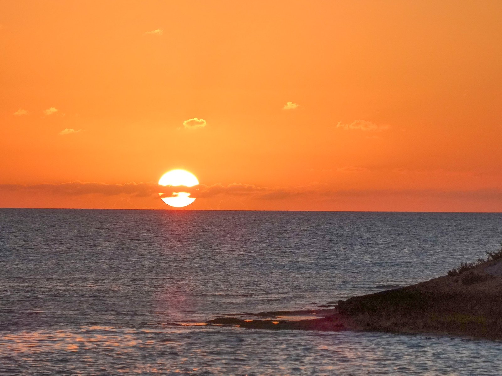
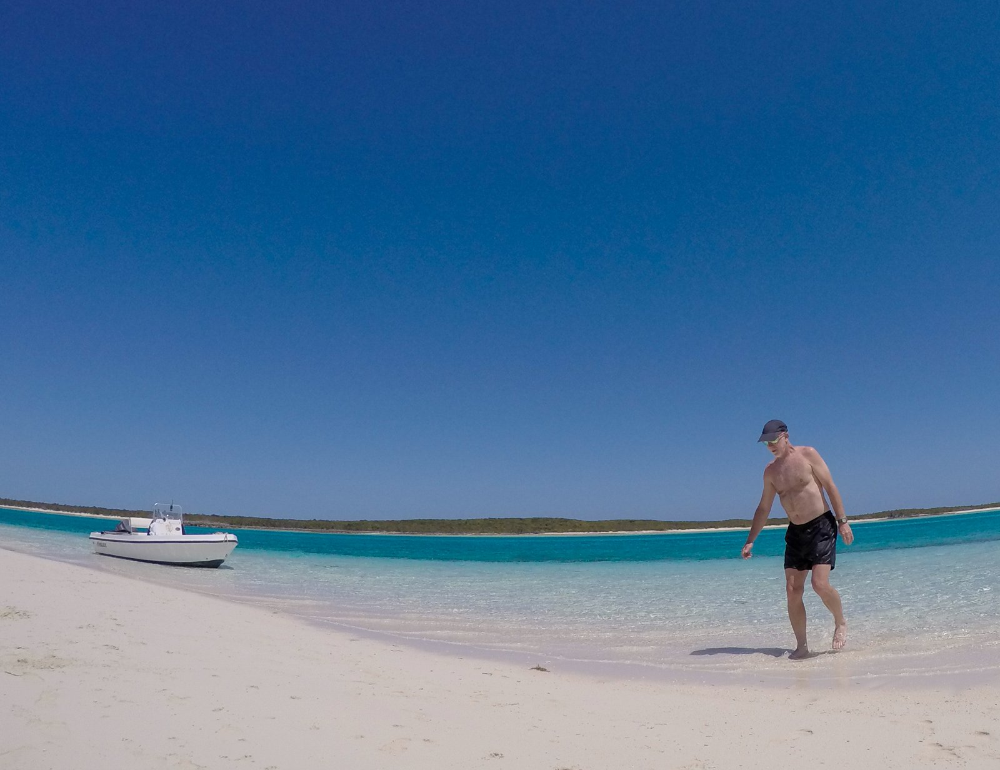
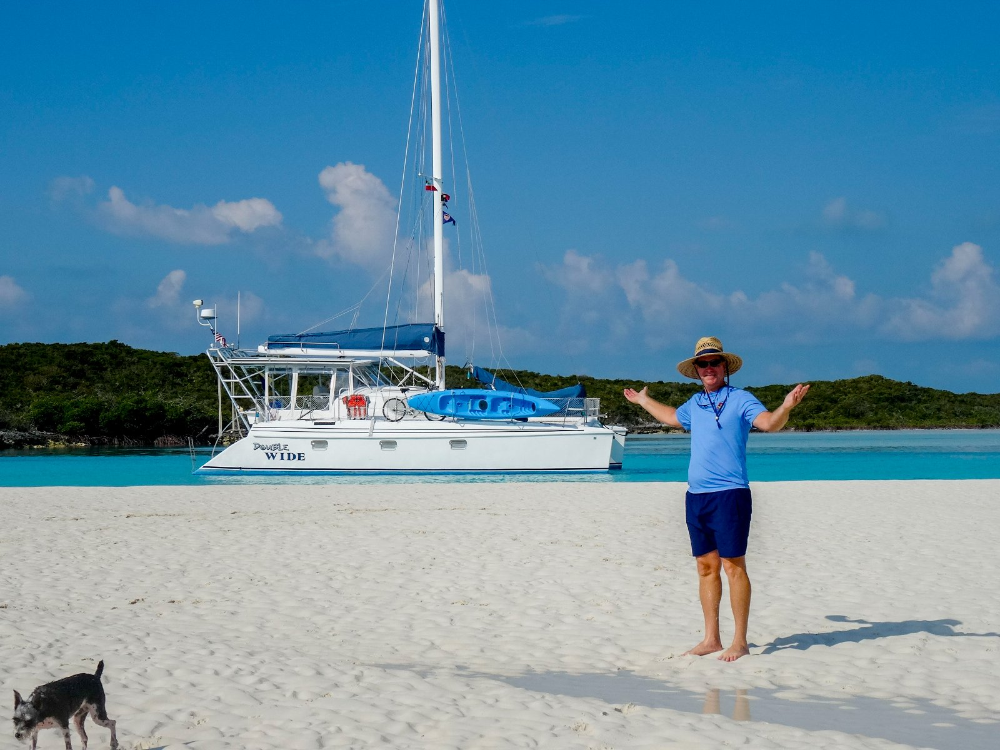
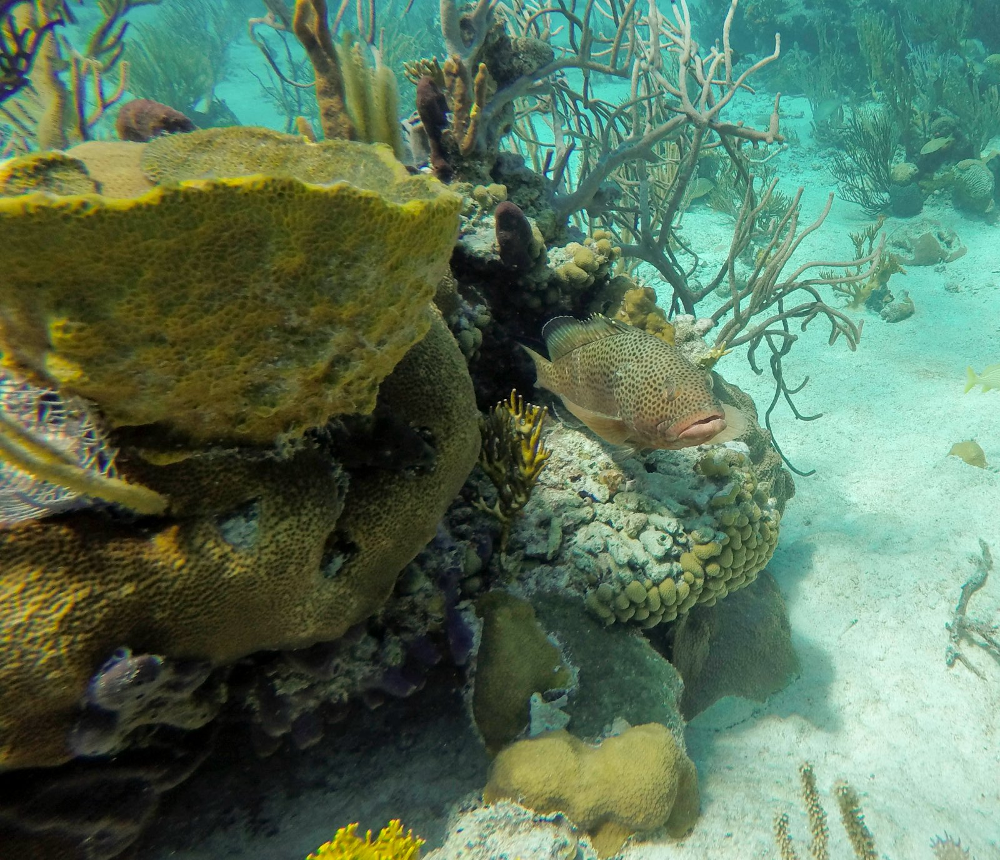
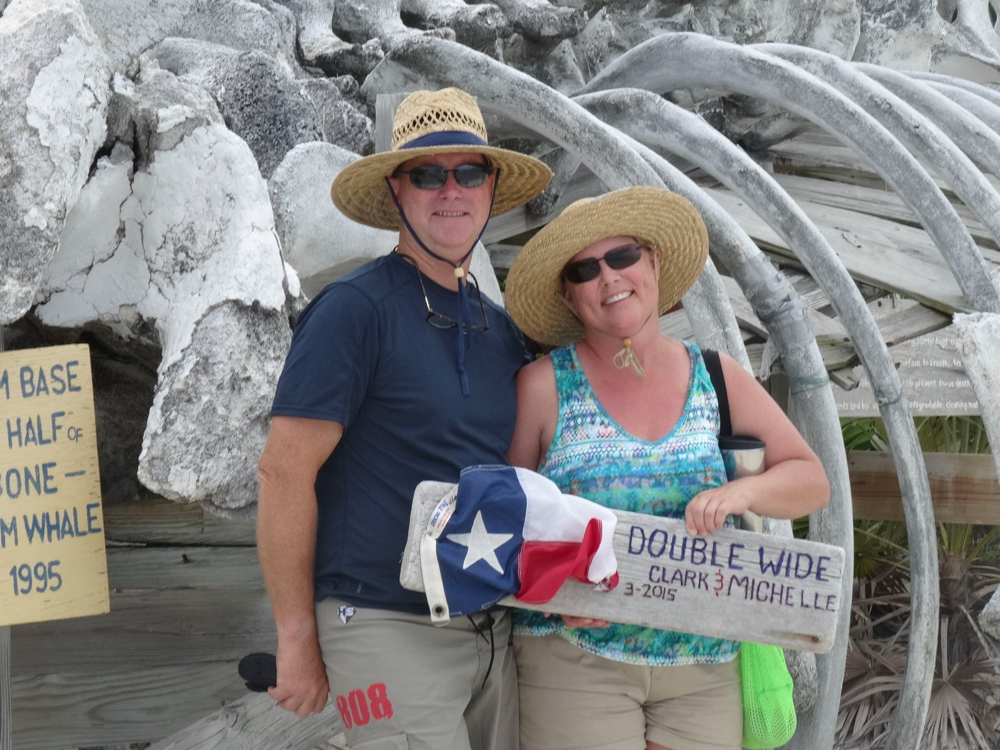
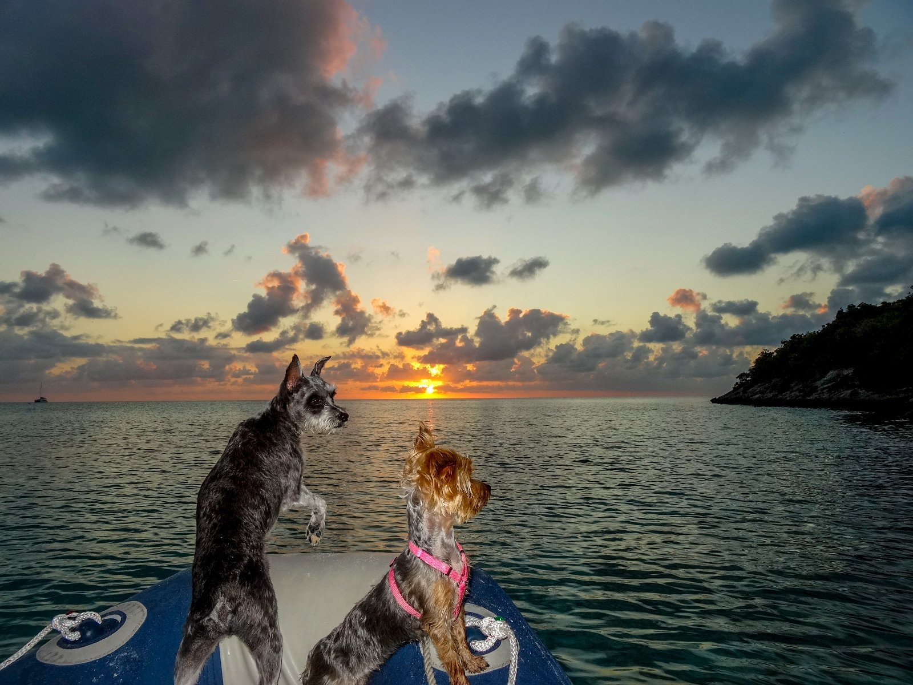

I have been going back through our old cruising logs lately. Before Haley Yachts, before I was the one helping owners plan their crossings and their island weeks, my wife and I lived this stuff. We sailed our own boat, a Manta 40 sailing Catamaran named DOUBLE WIDE down through the Bahamas, moved at the pace of the weather, and let the water decide a good part of where we ended up. One stretch keeps pulling me back when I read those notes: the weeks we spent inside the Exuma Cays Land and Sea Park. I wrote a short post about it at the time, called What We Get for Our Trouble, and the older I get the more I think that title had it exactly right.

So this is me revisiting that magical moment in time. Now from the other side of the brokerage desk, I'm sharing some of my experiences for anyone weighing whether the Exumas are worth the effort. They are. Let me tell you why.
Why the effort is the point
You do not stumble into the Exuma. You earn it. You cross the Gulf Stream, you pick your way down the chain, you watch the weather like it owes you money, and you put real miles under the keel to get there. That is the trouble. What you get for it is water so absurdly clear and so many shades of blue that words start to fail you. There is an old line that the Inuit have dozens of words for snow. I am convinced the Bahamas need at least a hundred and eighty for blue, and you still would not have enough. Gin-clear over white sand, deep sapphire in the cuts, a pale green on the banks at slack tide. You stop trying to name it and just l

"You cross a lot of water to get there. What you get for your trouble is a place clear enough to count the links in your anchor chain, and so many shades of blue you give up trying to name them."Clark Haley, Haley Yachts
The first park of its kind
At the top of the Exumas chain of islands, site a Bahamas national treasure. The Exuma Cays Land and Sea Park was the first of its kind anywhere in the world, a protected marine reserve set aside back in the 1950s and run today by the Bahamas National Trust. Roughly twenty-two miles of cays and the waters around them are a no-take zone. You do

That one rule is what makes the park unique and magical. Because nothing has been stripped out for decades, the reef life and the fish stocks inside the park are what the rest of the Bahamas used to look like. You snorkel a coral head and it is genuinely alive, crowded, busy. The same protection is why the park anchorages run on mooring balls in the sensitive spots rather than letting everyone drag a hook through the grass beds. You call ahead, you pay your fee, the money goes back into the park. It is one of the few places where doing the right thing as

Shroud, Warderick Wells, and Pipe Creek
Three places from that trip still live in my head.
Shroud Cay is all mangrove creeks and beach. We took the dinghy up the winding inland rivers at the right stage of tide, cut across the island through the mangroves, and came out on the ocean side at a beach you reach by water or not at all. That is Shroud: shallow, wild, and yours for an afternoon, but you'll be tempted to stay a week.
Warderick Wells is the heart of the park and home to its headquarters. The mooring field in the Horseshoe is one of those anchorages you remember for the rest of your life. The boats sit on their b

Pipe Creek, a little farther south and just outside of the park, is a maze of small cays and sandbars and quiet pockets to tuck into. It is the kind of place you explore by dinghy with no real plan, find a sandbar that surfaces at low tide, and pups run loose to look for starfish and sand crabs and whatever the water gives up that day.
The boating life this is all for
I do this work now, helping

I have run these waters with my own family aboard, and I am glad to help you plan yours, or find the boat to do it in. Reach out to Clark Haley at Haley Yachts and let's talk about the trip, the boat, and what you will get for your trouble.